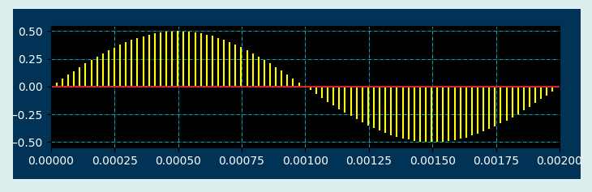

Stem二维曲线控件也可以显示二维曲线，但格式不同，其图形显示效果如下：

在Python程序GUI界面中创建一个Stem二维曲线控件的命令为:
hl=dr.DRStemX(win,x,y,w,h,title,cb1,cb2,cf1,cf2,cf3,xmin,xmax,ymin,ymax,xdata,ydata)
其中hl是创建时用户设定的变量名。当xmin,xmax均设为零时，x轴采用自动量程。当ymin,ymax均设为零时，y轴采用自动量程。当xdata和ydata设为零，则初始曲线为空。Plot二维曲线控件有3个属性函数。
hl.setXlim(xmin,xmax) #设定X轴显示范围
hl.setYlim(ymin,ymax) #设定Y轴显示范围
hl.setValue2D(x,y)#以覆盖形式绘制曲线
hl.setValue2DX(self,dx,x)#以覆盖形式绘制曲线
Stem二维曲线控件继承至Tkinter的Frame控件和Matplotlib的stem函数，必要时可参阅相关资料。
.